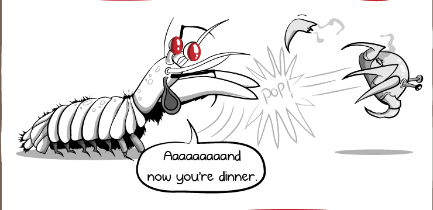
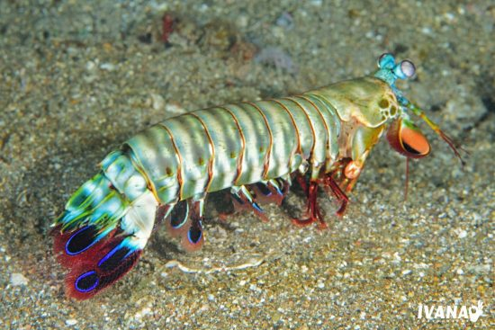

Fatos sobre o Stomatopoda
Stomatopoda (ou estomatópode), de nome científico Odontodactylus scyllarus, chamados popularmente de tamarutacas ou de lacraias-do-mar no Brasil, é uma ordem de crustáceos marinhos da subclasse Hoplocarida, que agrupa cerca de 400 espécies, caracterizadas principalmente pela morfologia da segunda pata torácica, que é modificada em apêndice subquelado, lembrando uma pata de louva-a-deus. Os estomatópodes são predadores ativos que caçam presas com o auxílio de um sentido de visão muito apurado e capaz de interpretar polarização no espectro ultravioleta e infravermelho). Apresentam uma grande variação de tamanho, que pode ir de poucos milímetros até aproximadamente 40 cm nas espécies maiores. Eles vivem em fundo consolidado, lodoso ou ainda arenoso, onde cavam seus buracos ou aproveitam-se dos orifícios deixados por outros animais para neles se instalar. São animais exclusivamente carnívoros, alimentando-se de camarões, caranguejos, moluscos, peixes e até mesmo outros da mesma ordem. O segundo par de patas, muito desenvolvido, é usado tanto para atacar a presa como para se defender. O urópodo, quando aberto, também funciona para defesa, como um escudo, fechando a galeria em que o animal esteja instalado. A fêmea desova no local onde se abriga e, em caso de perigo, enrola os ovos como uma bola, prendendo-os junto ao corpo até encontrar um abrigo mais protegido.
| Reino | Filo | Subfilo | Classe | Subclasse | Ordem |
|---|---|---|---|---|---|
| Animalia | Arthropoda | Crustacea | Malacostraca | Hoplocarida | Stomatopoda |
A velocidade do seu soco pode chegar a 80km/h
Tem dois apêndices raptoriais na parte frontal do corpo, estes aceleram com a mesma velocidade de um tiro de um rifle calibre 22, e em menos de três milésimos de segundo pode atingir a presa com 1500 newtons de força.
A água ao redor deles chega a ferver
Seus membros se movem tão rapidamente que a água ao seu redor ferve em um processo conhecido como supercavitação. Quando as bolhas de cavitação colapsam, produzem uma onda de choque submarina que pode matar a presa, mesmo que o Stomatopoda erre o alvo. A força dessas bolhas em colapso também produz temperaturas na faixa de vários milhares de kelvins e emite pequenas rajadas de luz. Este efeito é chamado sonoluminescência.
Desmembra suas presas

Usando esses "bastões de assassinato", o desmembramento é principalmente como o Stomatopoda mata sua presa. Ele esmaga outros animais em pedaços, esmagando caranguejos, moluscos, ostras e polvos até que a delícia comece a esguichar.